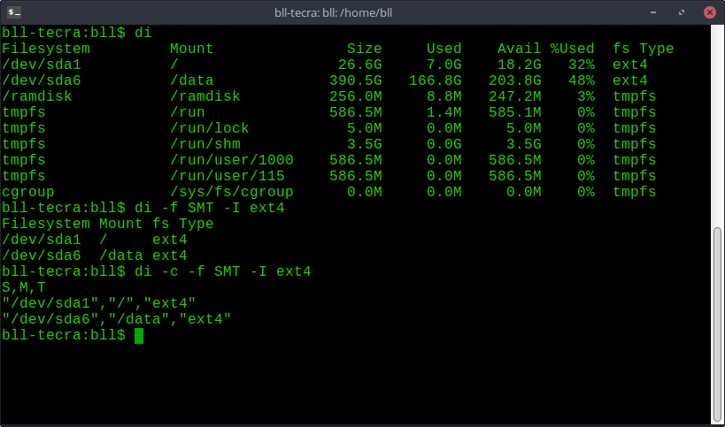
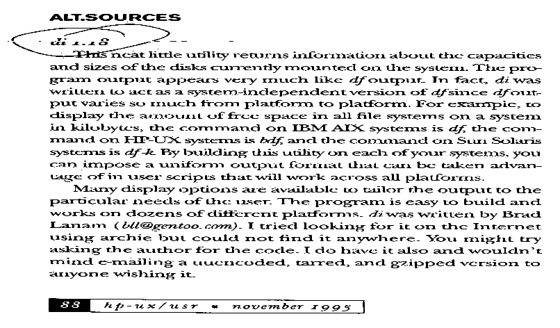

Current Version: #VERSION#
di is a disk information utility, displaying everything (and more) that your df command does. It features the ability to display your disk usage in whatever format you prefer. It also checks the user and group quotas, so that the user sees the space available for their use, not the system wide disk space.
It is designed to be portable across many platforms. Great for heterogenous networks.
With version 5, di now has a shared library that can be used to retrieve the disk space information. See the wiki page for details on the API.
di Manual PageSubmit bugs to Sourceforge di Tickets
Downloading di:
Source: di version #VERSION# (sourceforge.net)
Ports:
di is readily available via many distribution's package management system.
HP-UX Software Depots: http://hpux.connect.org.uk/hppd/hpux/Sysadmin/di-5.0.14/
Linux Packages Search (pkgs.org) (Arch, CentOS, Debian, OpenSUSE, Slackware, Ubuntu): https://pkgs.org/download/di
Linux Search (rpmfind.net) (RedHat): rpmfind.net
MacOS: Available through MacPorts Available via Homebrew
AIX: https://www.perzl.org/aix/index.php?n=Main.Di (4.44)
Solaris: https://www.opencsw.org/packages/di/ (4.35)

I can always use access to older / less common operating systems to test on. If you can supply secure-shell access to a standard shell account for occasional access, let me know (brad.lanam.di_at_gmail.com).
di has been ported to the following systems in the past:
A/UX, AIX, BeOS, BSD, BSDI, Convex, Cray UNICOS, Cray UNICOS/mk, DragonflyBSD, FreeBSD, Haiku, HP/UX, Linux, MacOSX, MirOS, NetBSD, Next, OpenBSD, OS/2, OSF/1, Pyramid, QNX, SCO OpenServer, SCO Unix, Sequent Dynix and PT/x, SGI Irix, Solaris, SunOS, Syllable, System V.3, System V.4, Tru64, Ultrix, UnixWare, VMS, Windows, Xenix
Copyright 1994-2021 Brad Lanam, Walnut Creek, CA, USA
This software is provided 'as-is', without any express or implied warranty. In no event will the authors be held liable for any damages arising from the use of this software.
Permission is granted to anyone to use this software for any purpose, including commercial applications, and to alter it and redistribute it freely, subject to the following restrictions:
1. The origin of this software must not be misrepresented; you must not claim that you wrote the original software. If you use this software in a product, an acknowledgment in the product documentation would be appreciated but is not required.
2. Altered source versions must be plainly marked as such, and must not be misrepresented as being the original software.
3. This notice may not be removed or altered from any source distribution.
HP-UX/USR. November 1995. [1.18]

Linux Journal. April 2002. [~3.4]
Linux Village (Hungarian) [PDF]. September 2002. [~3.7]
Linux Community (was Linux User) (German). January 2004. [~3.9]
Debian Administration. May 2005. [~3.11]
InfoLinux (Indonesian) [PDF]. Nov 2006. [4.7]
Linux Community (was Linux User) (German). May 2007. [4.10]
Linux Pro Magazine [PDF]. Feb 2013. [4.34] (parent)
Linux Community (German). April 2014 [4.35]
Linux运维日志 (Chinese). September 2017 [4.30]
Raspberry PI Geek (German). August 2018 [4.46]
Nice program. (JJB 1994)
Cool program. (CKV 1994)
Nice package. (MN 1994)
I just grabbed di from news and it looks great, ... Thanks for starting what will be one of the great sysadmin tools (PB 1994)
Thanks for a great tool! (T 1994)
If I may add my $.02 to your efforts (which I find rather exceptional, IMHO)... (SJW 1994)
BTW, nice program. Thanks for writing it. (MG 1994)
Thank you thank you thank you for the code,... Again, many thanks for posting the code. (BH 1994)
Great Utility! I love being able to specify the format of the output via commandline. Again, thanks for a great toy! (PK 1994)
Many thanks for your efforts!! (JK 1994)
Thanks very much for your efforts on di. (JC 1994)
First of all you wrote an excellent utility....(KM 1994)
It's great to have a Sun-like df again. Thanks! (JQ 1994)
(By the way, I stopped using 'df', since I installed 'di'. I like it.) (KH 1994)
'di' looks nice and will see much use here at 'liedus'. (RCP 1994)
Thanks for a new tool. ... Thanks again for a nifty file (BP 1994)
Thanks for this neat tool (RTB 1994)
Great tool! (PPK 1994)
Thanks for maintaining diskinfo! I find it *very* useful since I administer many different platforms. (EER 1995)
Thanks for the di command. It looks really useful.... Thanks again for the very useful program. (DD 1995)
Neat program, compiled first time, no errors, and it works great. (SR 1995)
Hi! I use your "di" program. It is great! Now I can have consistent reports of disk usage no matter what platform I am on. I use it on HP-UX, SunOS, IRIX, Ultrix, so far. Thanks a lot.
Great tool. We find it far more functional than even GNU df. Keep up the good work..
...thanks for writing and maintaining di. Its a really nice alternative to df, its what df largely should be. (GB 2011)
nice utility, thanks! (PM 2011)
Thanks for this nice tool, much better than df. (SH 2011)